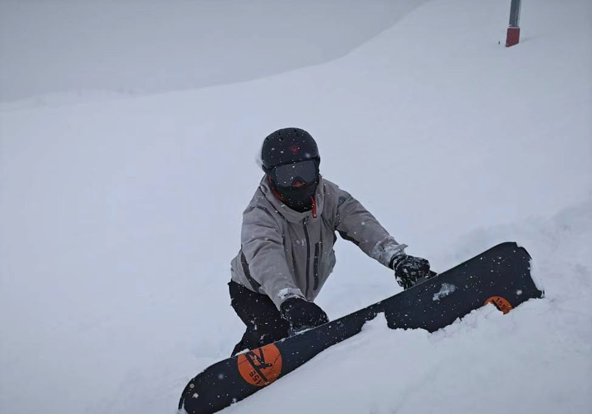
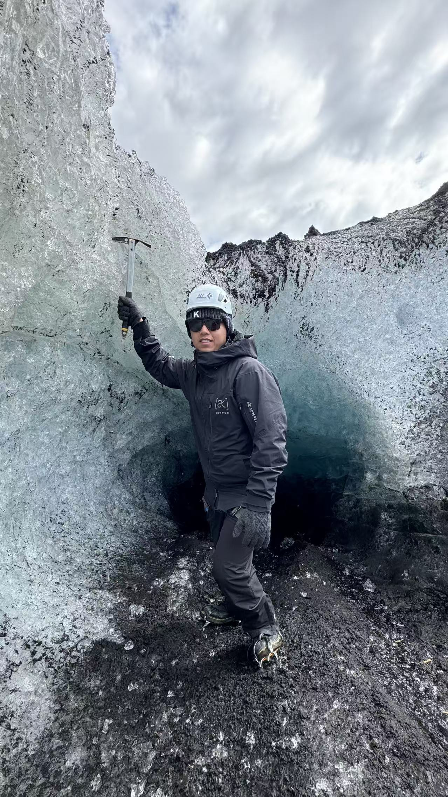
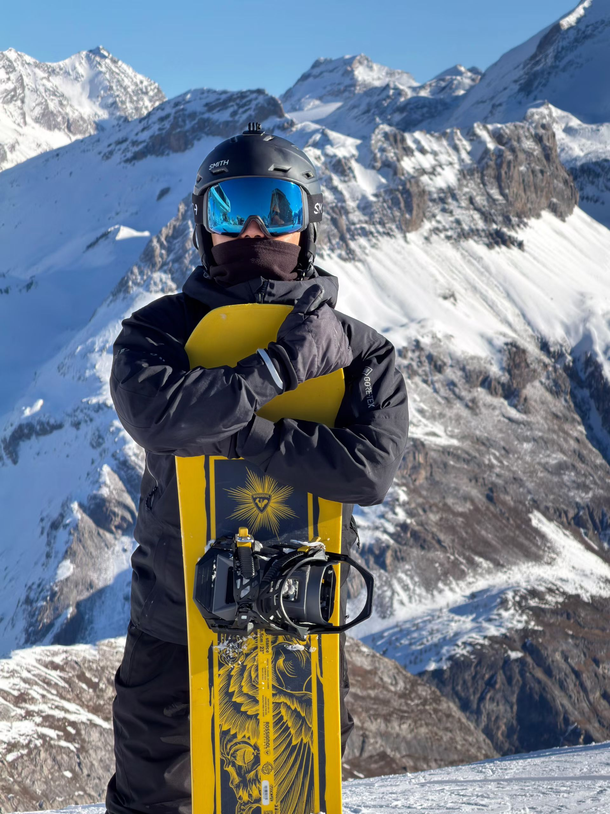
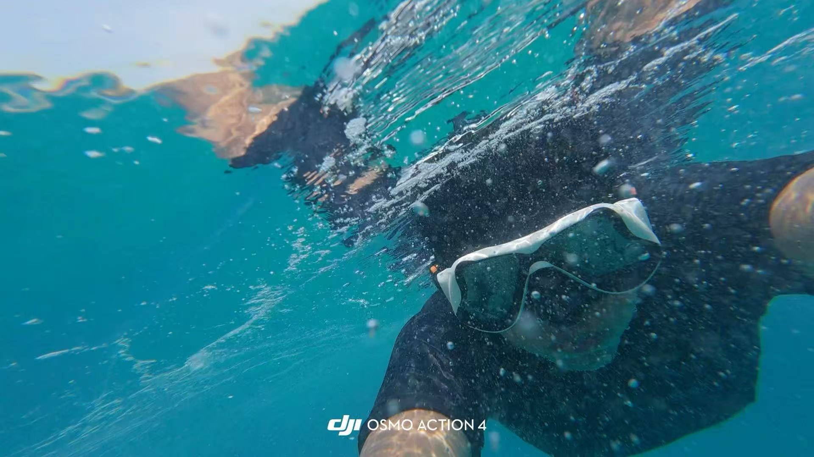

BEYOND RESEARCH
Exploring the outdoors.
Outside research, I enjoy snowboarding, diving, and hiking — from snowy mountain slopes to the sea and glaciers.


Saint-Lary-Soulan
Pyrenees, France


Hiking on Vatnajökull
Vatnajökull Glacier, Iceland


Tignes
Alps, France


Diving in Split
Split, Croatia